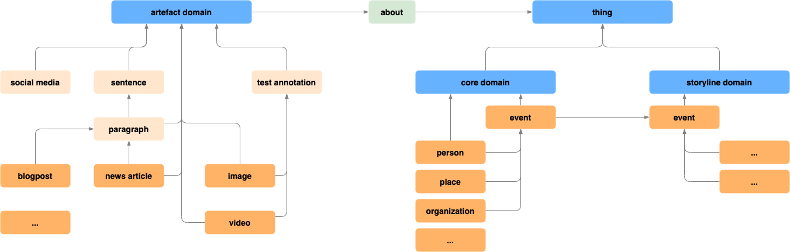

BBC R&D / BBCLabs have years of hand-on experience: Let's explore their data model.
This is a slightly modified / simplified model of the first applied iteration [1] and extended by
anticipated [current and new] artefacts.
[See also: BBC Ontologies]